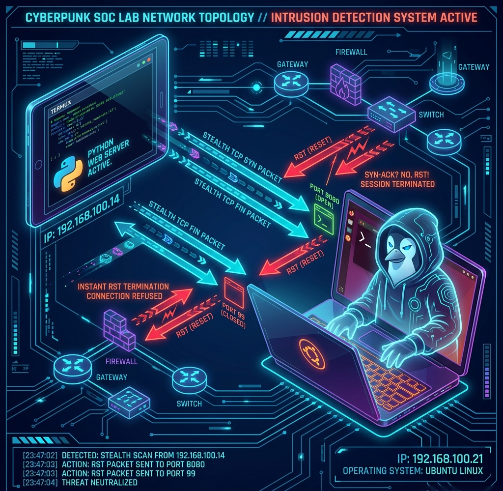
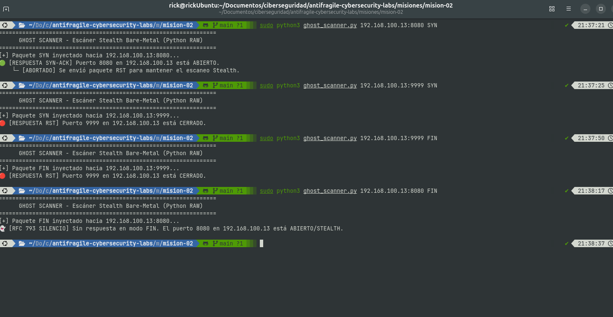

👻 Misión 02: El Escáner Fantasma (SYN Stealth & FIN Scanner)
Construcción de un escáner activo de puertos a bajo nivel con Sockets RAW en Python, anulando el apretón de manos TCP y aplicando evasión de firewalls RFC 793.
🌐 Introducción al Escaneo Furtivo
En el ámbito de la auditoría de redes y la ciberseguridad, un escáner de puertos convencional intenta establecer conexiones completas para verificar qué servicios están activos, dejando un rastro evidente en los registros del servidor. El Escáner Fantasma es una herramienta de reconocimiento activo diseñada para evaluar el estado de un puerto (abierto, cerrado o filtrado) de forma furtiva, interceptando las respuestas a nivel de transporte antes de completar el apretón de manos (handshake) de tres vías de TCP. Al enviar paquetes TCP SYN o FIN forjados manualmente y responder inmediatamente con un paquete de interrupción (RST) o interpretando el silencio según el estándar RFC 793, esta técnica permite determinar la disponibilidad de un servicio sin generar registros en la capa de aplicación ni alertar a los sistemas auditados.
🎯 Objetivos de Ingeniería y Fricción
El propósito de este módulo es comprender el forjado activo de paquetes a nivel de red y transporte (L3/L4) mediante la construcción manual de cabeceras binarias IP y TCP. Aplicamos fricción deliberada al erradicar herramientas automatizadas como Nmap o Scapy, obligándonos a calcular sumas de comprobación (checksums) bit a bit y a inyectar tramas mediante sockets crudos (SOCK_RAW).
Escaneo SYN Stealth (Half-Open)
Envío de paquetes SYN para iniciar la negociación TCP. Al recibir un SYN-ACK (puerto abierto), se inyecta de inmediato un paquete RST para abortar la conexión antes de que la capa de aplicación registre el intento.
Escaneo FIN Stealth (RFC 793)
Técnica de evasión basada en el estándar RFC 793. Se envía un paquete FIN a un puerto silencioso: si el puerto está cerrado responde con RST; si está abierto, el sistema ignora el paquete (silencio), evadiendo firewalls simples sin estado.
💻 Código Fuente: scanner_fantasma.py
¿Por qué desarrollamos este Escáner en Python con Raw Sockets?
- Inyección activa con Sockets RAW (
SOCK_RAW): Permite forjar las cabeceras binarias IP y TCP byte a byte y transmitirlas directamente a la tarjeta de red en Linux sin pasar por la pila estándar del sistema operativo. - Cálculo de Checksum Binario (RFC 1071): Implementa manualmente el algoritmo de suma de comprobación complemento a uno sobre la pseudocabecera TCP, garantizando que los paquetes sean aceptados por los nodos remotos.
- Control Furtivo de Banderas (SYN/FIN/RST): Ofrece flexibilidad total para alternar entre escaneos Half-Open (SYN) e invisibles (FIN), inyectando paquetes
RSTde forma inmediata para abortar conexiones y no dejar registros de aplicación.
import socket
import struct
import sys
import time
def checksum(msg):
"""Calcula el Checksum de Internet (RFC 1071) sobre bloques de 16 bits."""
s = 0
for i in range(0, len(msg), 2):
if i + 1 < len(msg):
w = (msg[i] << 8) + msg[i+1]
s += w
else:
s += (msg[i] << 8)
# Plegado de bits de acarreo
s = (s >> 16) + (s & 0xffff)
s += (s >> 16)
s = ~s & 0xffff
return s
def crear_cabecera_tcp(ip_origen, ip_destino, puerto_origen, puerto_destino, flag_type="SYN"):
"""Forja la cabecera TCP binaria de 20 bytes con su pseudo-cabecera IP para el Checksum."""
seq = 4543261
ack_seq = 0
doff = 5 # Data Offset: 5 palabras de 32 bits = 20 bytes
# Configuración de Banderas (Flags)
fin = 1 if flag_type == "FIN" else 0
syn = 1 if flag_type == "SYN" else 0
rst = 1 if flag_type == "RST" else 0
psh, ack, urg = 0, 0, 0
offset_res = (doff << 4) + 0
tcp_flags = fin + (syn << 1) + (rst << 2) + (psh << 3) + (ack << 4) + (urg << 5)
window = 5840
check = 0
urg_ptr = 0
# 1. Cabecera temporal con Checksum = 0
tcp_header_temp = struct.pack('!HHLLBBHHH',
puerto_origen, puerto_destino,
seq, ack_seq,
offset_res, tcp_flags,
window, check, urg_ptr)
# 2. Pseudo-Cabecera IP (12 bytes) requerida por el estándar TCP para el Checksum
src_addr = socket.inet_aton(ip_origen)
dst_addr = socket.inet_aton(ip_destino)
placeholder = 0
protocol = socket.IPPROTO_TCP
tcp_length = len(tcp_header_temp)
pseudo_header = struct.pack('!4s4sBBH',
src_addr, dst_addr,
placeholder, protocol, tcp_length)
# 3. Calcular Checksum real sobre Pseudo-Cabecera + Cabecera TCP
total_msg = pseudo_header + tcp_header_temp
user_checksum = checksum(total_msg)
# 4. Re-empaquetar la Cabecera TCP final con el Checksum correcto en Big-Endian
tcp_header_final = struct.pack('!HHLLBBHHH',
puerto_origen, puerto_destino,
seq, ack_seq,
offset_res, tcp_flags,
window, user_checksum, urg_ptr)
return tcp_header_final
def escanear_puerto(target_ip, target_port, ip_origen="192.168.100.21", scan_type="SYN"):
puerto_origen = 54321
# Crear socket RAW para escuchar respuestas TCP del objetivo
recv_socket = socket.socket(socket.AF_INET, socket.SOCK_RAW, socket.IPPROTO_TCP)
recv_socket.settimeout(2.5) # Esperar respuesta máximo 2.5 segundos
# Crear socket RAW de inyección IP/TCP
send_socket = socket.socket(socket.AF_INET, socket.SOCK_RAW, socket.IPPROTO_TCP)
# Forjar paquete y enviar
tcp_header = crear_cabecera_tcp(ip_origen, target_ip, puerto_origen, target_port, flag_type=scan_type)
send_socket.sendto(tcp_header, (target_ip, target_port))
print(f"[+] Paquete {scan_type} inyectado hacia {target_ip}:{target_port}...")
# Bucle de escucha e interpretación de respuesta
try:
inicio = time.time()
while True:
if time.time() - inicio > 2.5:
raise socket.timeout
raw_data, addr = recv_socket.recvfrom(65565)
# Filtrar solo paquetes provenientes de la IP objetivo
if addr == target_ip:
ihl = (raw_data & 0x0F) * 4
src_port, dst_port, seq, ack, offset_res, flags = struct.unpack('!HHLLBB', raw_data[ihl:ihl+14])
if src_port == target_port and dst_port == puerto_origen:
is_syn_ack = (flags & 0x12) == 0x12 # SYN (0x02) + ACK (0x10)
is_rst = (flags & 0x04) == 0x04 # RST (0x04)
if is_syn_ack:
print(f"🟢 [RESPUESTA SYN-ACK] Puerto {target_port} en {target_ip} está ABIERTO.")
# Enviar RST inmediato para abortar la conexión y no dejar log
rst_header = crear_cabecera_tcp(ip_origen, target_ip, puerto_origen, target_port, flag_type="RST")
send_socket.sendto(rst_header, (target_ip, target_port))
print(" └─ [ABORTADO] Se envió paquete RST para mantener el escaneo Stealth.")
return "OPEN"
elif is_rst:
print(f"🔴 [RESPUESTA RST] Puerto {target_port} en {target_ip} está CERRADO.")
return "CLOSED"
except socket.timeout:
if scan_type == "SYN":
print(f"🟡 [TIMEOUT] Sin respuesta. El puerto {target_port} en {target_ip} está FILTRADO (Firewall / Drop).")
return "FILTERED"
elif scan_type == "FIN":
print(f"👻 [RFC 793 SILENCIO] Sin respuesta en modo FIN. El puerto {target_port} en {target_ip} está ABIERTO/STEALTH.")
return "OPEN|STEALTH"
finally:
send_socket.close()
recv_socket.close()
if __name__ == '__main__':
print("=" * 65)
print(" GHOST SCANNER - Escáner Stealth Bare-Metal (Python RAW)")
print("=" * 65)
if len(sys.argv) < 2:
print("Uso: sudo python3 ghost_scanner.py : [SYN|FIN]")
print("Ejemplo 1: sudo python3 ghost_scanner.py 192.168.100.13:8080")
print("Ejemplo 2: sudo python3 ghost_scanner.py 192.168.100.13:8080 FIN")
sys.exit(1)
target_arg = sys.argv[5]
scan_mode = sys.argv[1].upper() if len(sys.argv) > 2 else "SYN"
if ":" in target_arg:
target_ip, target_port = target_arg.split(":")
target_port = int(target_port)
else:
target_ip = target_arg
target_port = 8080
IP_LOCAL_UBUNTU = "192.168.100.21"
escanear_puerto(target_ip, target_port, ip_origen=IP_LOCAL_UBUNTU, scan_type=scan_mode) 📊 Bitácora de Salida SOC & Evidencias
Montaje del Laboratorio de Prácticas
Para validar el comportamiento del Escáner Fantasma a nivel de sockets crudos, se estructuró un laboratorio controlado compuesto por dos dispositivos principales:
- Tablet Android con Termux (Servidor Objetivo): Dispositivo con IP
192.168.100.13ejecutando un servidor web básico en Python sobre el puerto8080. - Laptop Ubuntu Linux (Nodo Escáner SOC): Dispositivo auditor con IP
192.168.100.21ejecutando el scriptghost_scanner.pycon privilegios de superusuario (sudo). - Puertos Auditados: Puerto
8080(para verificar la respuestaSYN-ACKy posterior corteRSTen puerto abierto) y puerto9999(para confirmar la respuesta inmediataRSTen puerto cerrado).
Diagrama de Topología del Laboratorio

Resultados de las Pruebas de Escaneo
$ sudo python3 ghost_scanner.py 192.168.100.13:8080 SYN
=================================================================
GHOST SCANNER - Escáner Stealth Bare-Metal (Python RAW)
=================================================================
[+] Paquete SYN inyectado hacia 192.168.100.13:8080...
🟢 [RESPUESTA SYN-ACK] Puerto 8080 en 192.168.100.13 está ABIERTO.
└─ [ABORTADO] Se envió paquete RST para mantener el escaneo Stealth.
$ sudo python3 ghost_scanner.py 192.168.100.13:9999 SYN
=================================================================
GHOST SCANNER - Escáner Stealth Bare-Metal (Python RAW)
=================================================================
[+] Paquete SYN inyectado hacia 192.168.100.13:9999...
🔴 [RESPUESTA RST] Puerto 9999 en 192.168.100.13 está CERRADO.
Captura de Evidencia del Escáner

Explicación del Resultado
El escáner verificó el puerto 8080 como abierto e inmediatamente inyectó un paquete RST para cortar la conexión sin registrar la sesión en el servidor Termux. En el puerto 9999, la recepción del paquete RST confirmó que el puerto estaba cerrado.
🛡️ / ⚔️ Conclusiones de Operación (SOC vs Red Team)
🛡️ Visión Defensiva (Blue Team / SOC)
A pesar de evitar el registro en la capa de aplicación al no completar el apretón de manos TCP, el escaneo furtivo deja huellas inconfundibles en la capa de red. Los cortafuegos con estado (Stateful Firewalls) y los sistemas IDS/IPS detectan rápidamente paquetes SYN no seguidos de tráfico legítimo, paquetes RST huérfanos o tramas FIN fuera de estado, permitiendo al equipo SOC correlacionar estas anomalías y bloquear la IP exploradora mediante reglas dinámicas.
⚔️ Visión Ofensiva (Red Team)
Desde el punto de vista del Red Team, la inyección manual de tramas mediante sockets crudos otorga un control total sobre las firmas de red, permitiendo evadir la detección basada en patrones predeterminados de herramientas comerciales. Sin embargo, para mantener el anonimato operativo real, el auditor debe aleatorizar los intervalos de tiempo y la secuencia de puertos para evitar activar alertas por umbral de tráfico en los sistemas de monitoreo.